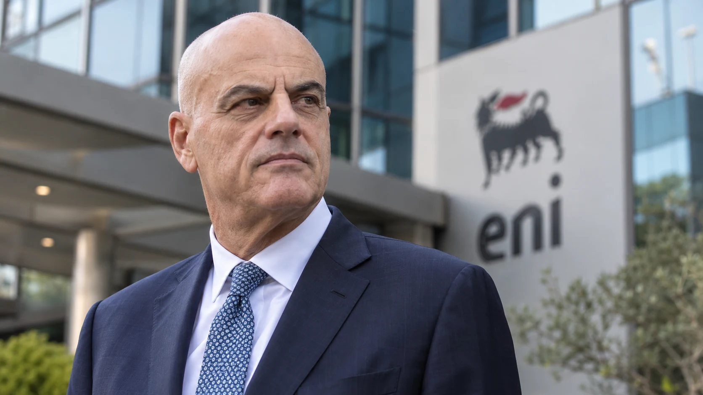

Questa indagine nasce il 22 settembre con una domanda: perché lo Stato, attraverso Eni, non usa la propria presenza industriale per fare concorrenza sul prezzo dei carburanti? Il dossier conserva il tempo reale dell’indagine: ciò che sappiamo il 22 resta scritto come il 22; il 25 arriva l’annuncio del price cap; il 26 ricostruiamo il ruolo del Governo e il nome del manager al vertice di Eni.
Scorri orizzontalmente per leggere l’intera cronologia.
| 22 settembre | Nasce l’indagine: Eni può essere usata come leva concorrenziale sul prezzo? |
|---|---|
| 25 settembre | Eni annuncia un tetto massimo per 30 giorni: 1,99 €/l benzina, 2,19 €/l gasolio. |
| 25 settembre, sera | Palazzo Chigi ringrazia Eni e parla di direzione “auspicata” per calmierare il caro carburante. |
| 26 settembre | Il nome pubblicamente associato alla scelta è Claudio Descalzi, AD e DG di Eni. |
In questo dossier
- 22 SETTEMBRE 2026 — L’INDAGINE PARTE QUI
- PERCHÉ PROPRIO ENI
- LA DOMANDA CHE RESTA APERTA IL 22 SETTEMBRE
- AGGIORNAMENTO — 25 SETTEMBRE 2026
- NON UNO SCONTO FISSO: UN PREZZO MASSIMO
- PRICE CAP E ACCISE SONO DUE COSE DIVERSE
- IL GOVERNO ENTRA NELLA NOTIZIA
- AGGIORNAMENTO — 26 SETTEMBRE 2026
- IL NOME: CLAUDIO DESCALZI
- CHI È DESCALZI
- IL 28 SETTEMBRE COMINCIA LA PROVA
- CONCLUSIONE — ENTE NAZIONALE IDROCARBURI
- Fonti documentali
22 SETTEMBRE 2026 — L’INDAGINE PARTE QUI
Oggi UNO SGUARDO SULL’UOMO apre una nuova indagine sul prezzo dei carburanti partendo da una domanda molto semplice: se lo Stato mantiene un ruolo decisivo in Eni e Eni dispone di una rete capillare di distribuzione, perché quella presenza non viene utilizzata anche per fare concorrenza sul prezzo alla pompa?
La domanda non riguarda un prezzo imposto per legge a tutto il mercato. Riguarda la possibilità che un grande operatore, controllato di fatto dallo Stato, scelga di comprimere il proprio prezzo e costringa gli altri operatori a misurarsi con quel riferimento.
Il titolo di lavoro è già definito: “ENI ALLA POMPA: PERCHÉ LO STATO NON FA CONCORRENZA SUL PREZZO DEL CARBURANTE?”.
Il punto da verificare è concreto: chi controlla davvero Eni, quanto spazio ha la società nella propria politica commerciale, quale ruolo può avere il Governo e fino a che punto un intervento sul prezzo di un grande operatore può muovere la concorrenza senza diventare un prezzo amministrato.
PERCHÉ PROPRIO ENI
Eni nasce il 10 febbraio 1953 come Ente Nazionale Idrocarburi. Nel 2026 è una società per azioni quotata e una multinazionale dell’energia, ma il rapporto con lo Stato resta strutturale.
Il Ministero dell’Economia e delle Finanze (MEF) possiede direttamente il 2,17% del capitale; Cassa Depositi e Prestiti (CDP) il 30,92%. La partecipazione complessiva riconducibile al settore pubblico arriva così al 33,09%. Sul proprio sito istituzionale Eni indica che il MEF esercita il “controllo di fatto” sulla società attraverso la quota diretta e quella detenuta tramite CDP.
Eni non è più un ente pubblico: è una società per azioni quotata. Ma il MEF ne esercita il controllo di fatto attraverso la partecipazione diretta e quella detenuta tramite CDP. In questo senso lo Stato italiano continua a fare impresa nel settore energetico come azionista di controllo, senza per questo gestire direttamente le singole decisioni commerciali della società.
LA DOMANDA CHE RESTA APERTA IL 22 SETTEMBRE
In questo momento non esiste alcun annuncio di un price cap Eni per i prossimi trenta giorni. La nostra è ancora un’ipotesi di lavoro: usare la forza commerciale di un grande operatore per creare pressione concorrenziale invece di affidarsi soltanto a bonus, accise o interventi fiscali.
È su questa ipotesi che l’indagine resta aperta.
AGGIORNAMENTO — 25 SETTEMBRE 2026
Tre giorni dopo l’apertura dell’indagine arriva la notizia che cambia tutto: Eni annuncia un tetto massimo al prezzo dei carburanti commercializzati da Enilive.
Dal 28 settembre e per trenta giorni il limite annunciato è di 1,99 euro al litro per la benzina e 2,19 euro al litro per il gasolio. Eni lascia aperta la possibilità di prorogare la misura fino alla fine dell’anno in funzione dell’andamento del mercato e degli approvvigionamenti.
La decisione di Eni è coerente con l’ipotesi formulata il 22 settembre: usare il prezzo come leva competitiva. Non dimostra da sola che il Governo l’abbia richiesta o determinata, ma mostra che un grande operatore controllato di fatto dallo Stato può intervenire sul proprio prezzo per esercitare pressione concorrenziale.
NON UNO SCONTO FISSO: UN PREZZO MASSIMO
La misura non va letta come uno sconto fisso di 17 centesimi. Eni segnala che, al momento dell’annuncio, i valori fissati risultano circa 17 centesimi inferiori ai livelli medi del momento, ma quella è soltanto una fotografia del 25 settembre.
Il meccanismo è un altro: Eni dichiara un prezzo massimo per trenta giorni. Se il mercato scende, il prezzo può scendere. Se il mercato sale, il tetto annunciato resta 1,99 euro per la benzina e 2,19 per il gasolio, nei limiti e alle condizioni comunicate dalla società.
PRICE CAP E ACCISE SONO DUE COSE DIVERSE
Nelle stesse ore è in vigore anche un intervento dello Stato sulle accise. I due strumenti non vanno confusi.
La riduzione delle accise è una scelta fiscale: interviene su una componente del prezzo. Il price cap Eni è una scelta commerciale della società: stabilisce il massimo che Eni intende applicare ai carburanti Enilive nel periodo indicato.
Eni collega il proprio tetto all’agevolazione fiscale in vigore, ma le due misure restano distinte. Dal 26 settembre lo sconto fiscale sul gasolio si riduce da 12,2 a 6,1 centesimi al litro, IVA inclusa, fino al 5 ottobre. Proprio per questo, da qui in avanti, qualsiasi confronto serio dovrà separare l’effetto fiscale dalla politica commerciale di Eni.
IL GOVERNO ENTRA NELLA NOTIZIA
Alle 17:47 arriva una nota di Palazzo Chigi. Il Governo ringrazia Eni, definisce la scelta un “lodevole atto di attenzione all’Italia” e afferma che l’iniziativa va nella “auspicata direzione di calmierare il caro carburante”.
La parola “auspicata” è il dato politico più importante disponibile oggi: il Governo dichiara pubblicamente che quella direzione coincide con il risultato che desiderava ottenere.
Non è ancora pubblico un atto che documenti un ordine del Governo a Eni, una delibera del MEF che imponga il price cap o una ricostruzione formale di eventuali interlocuzioni precedenti all’annuncio. Oggi possiamo documentare questo: Eni annuncia il tetto; poche ore dopo Palazzo Chigi dice che quella è la direzione auspicata.
AGGIORNAMENTO — 26 SETTEMBRE 2026
Oggi l’indagine cambia domanda. Non dobbiamo più chiederci se Eni possa usare il prezzo come leva competitiva: Eni ha appena annunciato che lo farà per trenta giorni. Dobbiamo capire chi rappresenta il vertice della decisione e quale relazione esiste tra la scelta societaria e la linea politica del Governo.

IL NOME: CLAUDIO DESCALZI
Il nome che emerge pubblicamente attorno alla decisione è Claudio Descalzi, Amministratore Delegato e Direttore Generale di Eni.
Il 7 maggio 2026 il Consiglio di Amministrazione lo ha nuovamente nominato AD e DG, conferendogli i poteri di amministrazione della società, salvo le competenze riservate al Consiglio e quelle non delegabili per legge.
Il giorno dell’annuncio Confimprenditori ringrazia direttamente “l’amministratore delegato Descalzi per il provvedimento”. Questa mattina La Stampa titola: “Carburanti, Descalzi tende la mano a Meloni e blocca i prezzi di Eni”. Sono attribuzioni pubbliche che associano la scelta al vertice del gruppo.
Non abbiamo un verbale interno che consenta di scrivere che Descalzi abbia deciso personalmente e da solo il price cap. Possiamo però attribuire con precisione il volto manageriale dell’operazione: Eni è guidata da lui e le prime ricostruzioni pubbliche collegano la scelta al suo vertice.
CHI È DESCALZI
Claudio Descalzi nasce a Milano e si laurea in Fisica all’Università degli Studi di Milano. Entra in Eni nel 1981 come ingegnere di giacimento.
La sua carriera si sviluppa interamente dentro il gruppo: Mare del Nord, Libia, Nigeria, Congo, incarichi nelle controllate estere, responsabilità nella Exploration & Production e infine il vertice della società.
Nel maggio 2014 diventa Amministratore Delegato di Eni. Nel 2026 è ancora alla guida del gruppo. Nel giugno 2025 il Presidente della Repubblica Sergio Mattarella lo nomina Cavaliere del Lavoro; nell’aprile 2026 riceve il Premio Leonardo.
Il dato più significativo per questa vicenda è la continuità: nel 2026 Descalzi lavora in Eni da quarantacinque anni. Non è un manager arrivato dall’esterno. Conosce produzione, approvvigionamenti, mercati internazionali, raffinazione e struttura industriale del gruppo dall’interno.
IL 28 SETTEMBRE COMINCIA LA PROVA
Fra due giorni il price cap entra in vigore. Da quel momento la decisione diventa verificabile distributore per distributore.
Il primo dato sarà il rispetto effettivo del tetto nella rete interessata. Il secondo sarà l’andamento dei prezzi degli altri operatori. Il terzo sarà la durata reale della misura. Il quarto sarà il costo economico che Eni dovrà assorbire se le quotazioni internazionali continueranno a salire.
Dovremo inoltre tenere separato l’effetto del price cap dall’effetto delle accise. Senza questa distinzione sarebbe impossibile capire quale parte dell’eventuale beneficio alla pompa venga dalla fiscalità e quale dalla scelta commerciale di Eni.
CONCLUSIONE — ENTE NAZIONALE IDROCARBURI
Il 22 settembre avevamo aperto questa indagine chiedendo perché lo Stato non utilizzasse Eni per fare concorrenza sul prezzo dei carburanti.
Il 25 settembre Eni ha annunciato l’ingresso su quel terreno: non un prezzo imposto a tutti, ma un tetto massimo sulla propria rete per trenta giorni. La decisione appartiene alla società; non prova, in assenza di documenti, che sia stata ordinata dal Governo.
Oggi, 26 settembre, sappiamo anche che Palazzo Chigi considera quella scelta coerente con la direzione che auspicava e che il nome pubblicamente associato al vertice dell’operazione è Claudio Descalzi.
Non sappiamo ancora se vi sia stata una richiesta preventiva del Governo, quale organo societario abbia formalizzato internamente il provvedimento e quale costo Eni sia pronta a sostenere se il mercato dovesse salire. Questi punti restano aperti e andranno aggiornati quando emergeranno documenti o dichiarazioni.
Ma una cosa, rispetto al 22 settembre, è già cambiata: la domanda “si può fare?” non è più teorica. Dal 28 settembre cominceremo a vedere che cosa succede quando il gruppo energetico controllato di fatto dallo Stato decide di fissare un tetto al prezzo dei propri carburanti.
Per questo il vecchio nome — Ente Nazionale Idrocarburi — torna ad avere un significato contemporaneo. Non come nostalgia, ma come domanda concreta sul ruolo che una grande impresa energetica partecipata può ancora esercitare quando interesse industriale e interesse nazionale si incontrano.
“Il Governo ringrazia Eni per l’importante iniziativa di porre un tetto massimo al prezzo di benzina e gasolio… va nella auspicata direzione di calmierare il caro carburante.” — Palazzo Chigi, 25 settembre 2026
FONTI DOCUMENTALI
- Eni — “La nostra storia, un percorso sempre all’avanguardia” — consultato il 26 settembre 2026.
- Eni — “Azionariato” — dati aggiornati al 23 luglio 2026.
- Eni — Relazione sul governo societario e gli assetti proprietari 2025 — pubblicata nel 2026.
- Eni — “Claudio Descalzi, Amministratore Delegato” — biografia istituzionale — consultata il 26 settembre 2026.
- Eni — “Il Consiglio di Amministrazione conferma Claudio Descalzi Amministratore Delegato e nomina i Comitati consiliari” — 7 maggio 2026.
- Eni — comunicazione sul price cap dei carburanti Enilive — 25 settembre 2026.
- ANSA — “Eni, tetto di 2,19 euro al prezzo del gasolio, 1,99 per la benzina” — 25 settembre 2026, ore 16:23.
- ANSA — “Il governo ringrazia Eni, il price cap lodevole atto di attenzione all’Italia” — 25 settembre 2026, ore 17:47.
- Rai News — “Eni fissa un tetto al prezzo dei carburanti: 2,19 euro sul gasolio, 1,99 per la benzina” — 25 settembre 2026.
- Il Sole 24 Ore Radiocor / Borsa Italiana — “Carburanti: Confimprenditori, bene tetto prezzi di Eni, Governo faccia sua parte” — 25 settembre 2026.
- La Stampa — Alessandro Barbera, “Carburanti, Descalzi tende la mano a Meloni e blocca i prezzi di Eni” — 26 settembre 2026.
- UNO SGUARDO SULL’UOMO — cronologia interna dell’indagine “ENI ALLA POMPA” — apertura 22 settembre 2026.